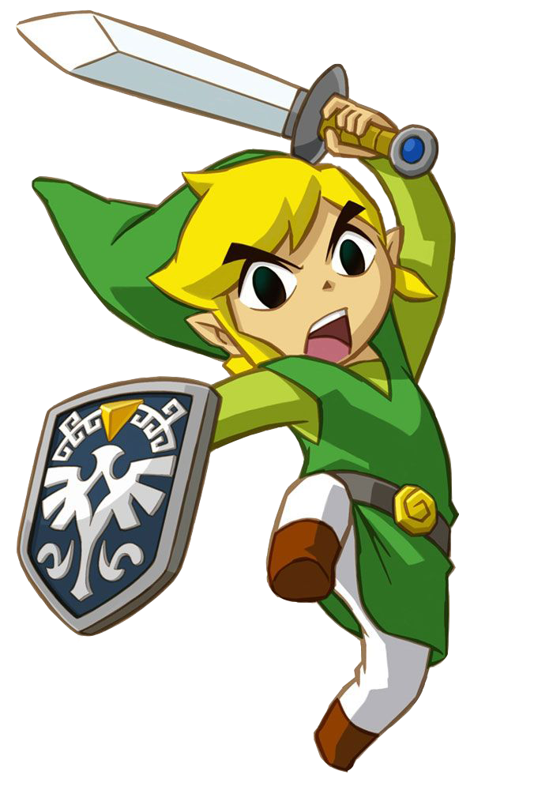

|  |
The Legend of Zelda: Twilight Princess (2006) |
 |
The Legend of Zelda
(1987) |
The Legend of Zelda: Twilight Princess (Japanese: ゼルダの伝説 トワイライトプリンセス) is a video game for the Nintendo GameCube and Nintendo Wii that was released in 2006. It was developed and published by Nintendo, and is the thirteenth video game in the very popular The Legend of Zelda series. The game was originally going to be released solely on the GameCube in November 2005, though it was delayed by a whole year. Shortly before E3 2006, it was reported by EGM that the game would be released on both the Wii and GameCube consoles.
The game has a more mature theme than previous incarnations, and is the first game in the series to be rated T for Teen by the ESRB.
Link is controlled in a similar fashion to previous entries in the series, namely Ocarina of Time, Majora's Mask and The Wind Waker. Its maturity has been considerably increased in terms of graphics and controls, not to mention its intriguing plot and characters.
The enormity of Hyrule almost dwarfs that of previous games. In all, there are nine main dungeons, each one containing a new item, a mid-boss, and a final boss. Link will also obtain many quest items in the dungeons, including fused shadows (first half of the game) and mirror shards (second half of the game).
One of the more notable features in the fact that once Link enters the twilight world, he will turn into a wolf. This wolf is very powerful and can move rather fast as well (though not as fast as Epona). Some of the special features that wolf Link can perform that is human form cannot is his ability to go into his sense mode, which will allow him to find ghosts, people from the light world that are stuck in the twilight, his ability to dig to find secrets and to get into certain previously inaccessible areas. While Midna is on his back, Link is able to use dark energy, which will form a large circle that will kill any enemies that are within the force field. He is also able to jump long distances while Midna is on his back. Wolf Link will also learn special howls, akin to the songs in Ocarina of Time or the spells in Wind Waker.
|
NES (Nintendo Entertainment System) NES 2 |
| Zelda II: The Adventure of Link (1988) |
Super NES |
| The Legend of Zelda: A Link to the Past (1991) |
Game Boy |
| The Legend of Zelda: Link's Awakening (1993) |
Nintendo 64 N64 2 |
| The Legend of Zelda: Ocarina of Time (1998) |
Gameboy Colour |
| The Legend Of Zelda: Majora's Mask (2000) |
Nintendo Gamecube NG 2 NG 3 |
| The Legend of Zelda: Oracle of Seasons/Ages (2001) |
Gameboy Advance |
| The Legend of Zelda: The Wind Waker (2002) |
Wii |
| The Legend of Zelda: Four Swords Adventures (2004) |
Nintendo DS NDS 2 |
| The Legend of Zelda: The Minish Cap (2004) |
Nintendo 3DS 3DS 2 |
| The Legend of Zelda: Twilight Princess (2006) |
Wii U |
| The Legend of Zelda: Phantom Hourglass (2007) |
Gameplay |
| The Legend of Zelda: Spirit Tracks (2009) |
Music and Sound |
| The Legend of Zelda: Skyward Sword (2011) |
Setting |
| The Legend of Zelda: A Link Between Worlds (2013) |
Chronology |
| The Legend of Zelda: Triforce Heroes (2015) |
Main Characters |
| The Legend of Zelda (Wii U) (2017) |
History |
| *Link, Zelda, and all other official aspects of The Legend of Zelda series, including images, are trademarks of Nintendo. |